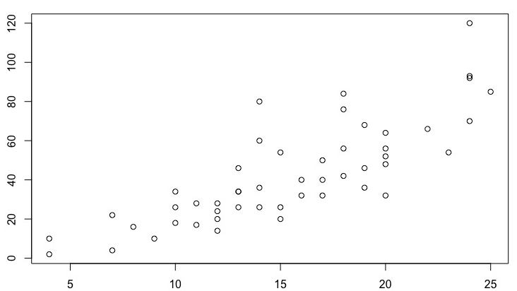
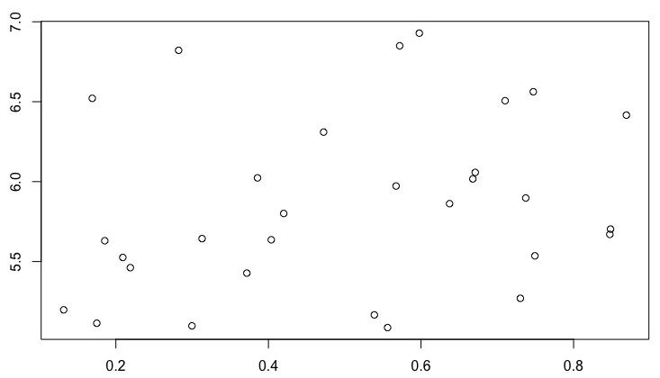
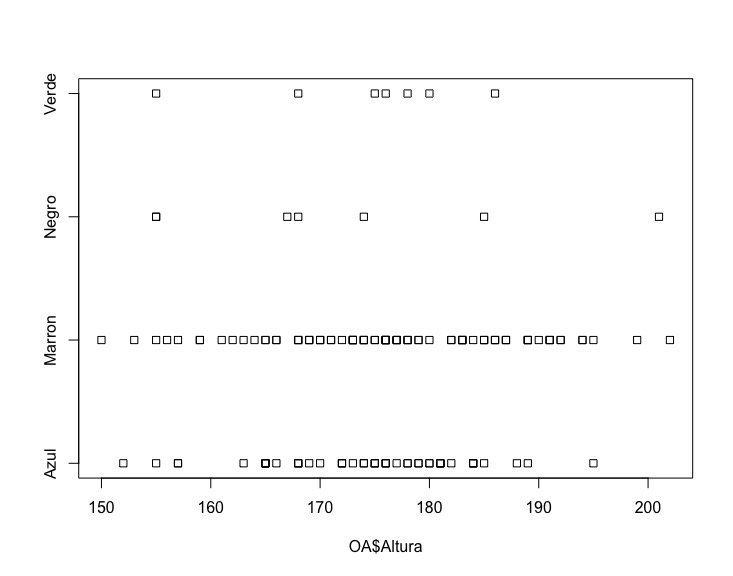
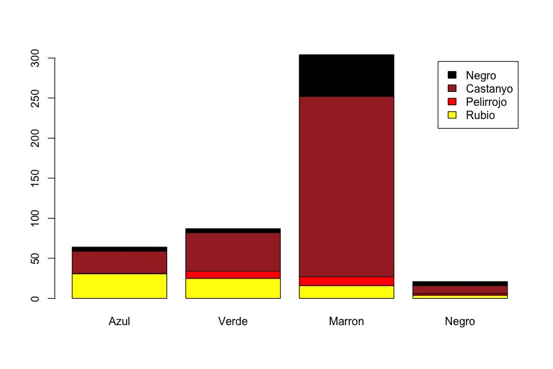
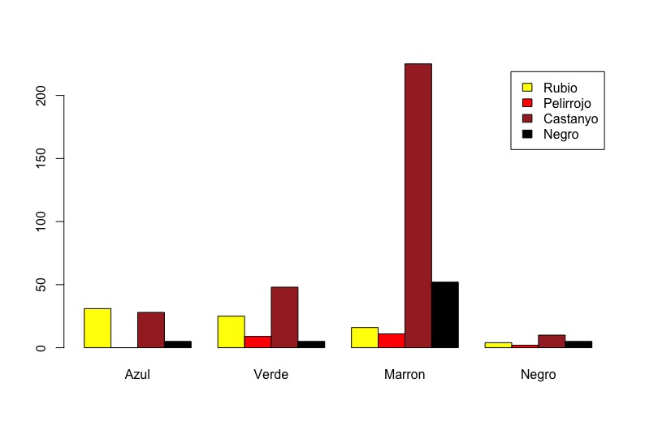
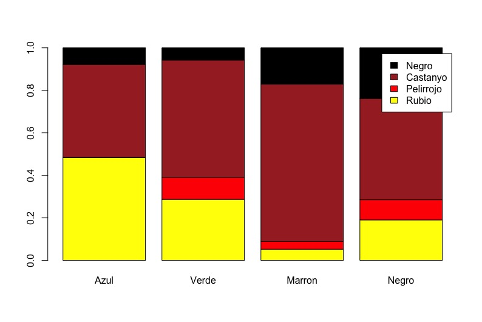
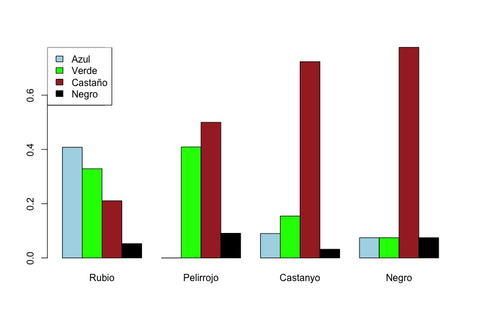

Capítulo 5 Estadística descriptiva de datos bivariantes
Una vez visto cómo escribir datos de una variable, veamos cómo describir datos de dos variables. Cómo tenemos dos tipos de variables, numéricos y cualitativos, tenemos tres casos: dos variables numéricas, una numérica y una cualitativa, y dos variables cualitativas. Cada una tiene sus métodos y sus gráficas.
5.1 Dos variables numéricas
En este caso, y en todos, primero hay que estudiar cada variable por separado utilizando las técnicas ya explicadas. Si alguna de las dos (o las dos) son muy problemáticas, tenemos que ir con precaución y saber que las inferencias que podamos hacer pueden no ser fiables. Hay que estudiarlas por separado pues se ve mucho mejor la modalidad, simetría e incluso los valores atípicos por separado que todo junto.
5.1.1 Gráfica de nube de puntos
La gráfica más habitual a la hora de representar dos variables numéricas es la nube de puntos (en inglés scatterplot). Hay que decidir qué variable va en el eje horizontal, cuál va en la vertical, escoger bien la escala y dibujarlo. Veamos un ejemplo.
Tenemos una resistencia, le aplicamos voltajes de 3 en 3 voltios y
medimos la intensidad que pasa por el circuito. Los resultados que
obtenemos los introducimos en R. Hemos aplicado el voltaje y hemos
medido la intensidad. En este caso se debe poner el voltaje (el
estímulo) en el eje X y la intensidad (la respuesta) en
el eje Y. La instrucción para dibujarlo es plot():
V = c(3, 6, 9, 12, 15, 18, 21, 24, 27, 30)
I = c(0.021, 0.049, 0.093, 0.111, 0.159, 0.183, 0.204, 0.219,
0.270, 0.301)
plot(V,I)
Una primera cosa que vemos es que los puntos se ajustan muy bien a una curva, en este caso una recta. Decimos que las dos variables están fuertemente correlacionadas. La figura siguiente muestra un gráfico en donde no se ajustan tan bien y están débilmente correlacionadas. 
Y ahora mostramos una nube de puntso en el que no vemos curva alguna. Las variables probablemente no estén correlacionadas. 
5.1.2 Rectas de regresión
Un cálculo que se puede hacer para tener una idea más clara de lo que
significan los datos es calcular y dibujar la recta de regresión, esto es,
la recta que mejor se ajusta a los puntos. Hacerlo a mano es lento, pero
en un ordenador es inmediato. La instrucción de R para hacerlo es
lm(y~x). La forma de escribir la función parece un poco rara. Se
entiende mejor si se lee el símbolo “~” como “en función de”. Así la
funcion sería la que calcula la recta de regresión de \(y\) en función de
\(x\). En el caso de la resistencia la instrucción sería recta = lm(I~ V). Hemos asignado el resultado a la variable recta lo que nos será un
poco más cómodo más adelante. A través de summary() obtenemos la
información más importante:
##
## Call:
## lm(formula = I ~ V)
##
## Residuals:
## Min 1Q Median 3Q Max
## -0.0177576 -0.0043182 0.0002424 0.0060455 0.0131515
##
## Coefficients:
## Estimate Std. Error t value Pr(>|t|)
## (Intercept) -0.0056667 0.0063554 -0.892 0.399
## V 0.0101010 0.0003414 29.585 1.85e-09 ***
## ---
## Signif. codes: 0 '***' 0.001 '**' 0.01 '*' 0.05 '.' 0.1 ' ' 1
##
## Residual standard error: 0.009303 on 8 degrees of freedom
## Multiple R-squared: 0.9909, Adjusted R-squared: 0.9898
## F-statistic: 875.3 on 1 and 8 DF, p-value: 1.847e-09De todo esto, en estos momentos sólo interesa lo que hay bajo
Estimate y tras Adjusted R-squared.
Lo que hay bajo Estimate nos da la recta. Tenemos que \(I = -0.005 + 0.010\cdot V\). Tras Adjusted R-squared tenemos el
coeficiente de correlación. Es un número que siempre va a estar entre
\(0\) y \(1\). Como está muy cerca de 1, tenemos una muy fuerte
correlación. Si estuviera cerca de 0 apenas habría correlación. Podemos
añadir la recta a la gráfica con la función abline(). Con
las instrucciones

añadimos la recta a la gráfica en color rojo.
Haciendo un lm() en los otros dos casos vemos que el
coeficiente de correlación es mucho menor: 0,64 en el caso de la
correlación débil y 0,07 en el caso de la correlación apenas existente.
5.2 Una variable numérica y una cualitativa
Como muchos nórdicos son altos y con ojos azules, nos preguntamos si hay alguna correlación entre la altura de una persona y su color de ojos. Escogemos una buena muestra y tomamos los datos: el color de ojos y la altura de cada individuo. Obtenemos un data frame más o menos como el siguiente:
ColorOjos Altura
Azul 177
Marron 187
Azul 155
Marron 173
Marron 177
Verde 186
... ...Como se ha dicho en el apartado anterior, lo primero que se debe hacer es un estudio de cada variable por separado. Es decir, una tabla de contingencia y un diagrama de barras del color de ojos y medidas de centralidad y dispersión y un diagrama de caja, histograma, etc. de las alturas. Una vez hecho esto, podemos empezar el estudio conjunto.
Esencialmente el estudio conjunto es hacer un estudio de la variable numérica para cada nivel del factor. En este caso, coger las alturas de los individuos de cada color de ojos, y estudiar la altura para cada caso. Esto implica hacer, por ejemplo, cuatro histogramas, uno para cada color de ojos. Cuatro histogramas separados son difíciles de comparar y por lo tanto poco útiles. Hay dos diagramas, el de puntos y el de cajas que se prestan a verlos en conjunto y éstos son los que más se usan. Además R facilita su creación.
El diagrama de puntos se crea con la instrucción stripchart()
y el operador ~: stripchart(OA$Altura~ OA$ColorOjos),
es decir, un diagrama de puntos para las alturas en función del color
de ojos. Siempre ha de ser la variable numérica en función de la
variable cualitativa. Podemos ver el resultado en la figura siguiente.

El de cajas se crea de forma muy similar, con la instrucción
boxplot(OA$Altura~ OA$ColorOjos):
variable cualitativa. Podemos ver el resultado en la figura siguiente.

En el diagrama de puntos vemos gráficamente ya lo sabíamos por la tabla de contingencia del color de ojos que habíamos hecho: que hay pocos datos de gente con ojos verdes y ojos negros y por lo tanto el que el diagrama de cajas salga algo distinto, no significa mucho. Y el “valor atípico” de los ojos verdes, tampoco. Y entre los ojos azules y marrones, no parece que haya mucha diferencia. Las inferencias estadísticas nos darán más información, pero si hay una diferencia, parece que es pequeña.
5.3 Dos variables cualitativas
Ya vimos que con las variables cualitativas lo único que podíamos hacer era contar. Y con dos variables cualitativas pasa lo mismo, sólo que ahora podemos contar cuántos hay en cada intersección de niveles. Esto quiere decir que la tabla de contingencia ya no es unidimensional, sino bidimensional. Para explicarlo usemos un ejemplo típico: el color de ojos y de pelo.
Usemos datos de 476 personas. Los datos está en un data frame de dos columnas:
Pelo Ojos
1 Castaño Negro
2 Castaño Verde
3 Negro Marron
4 Castaño Negro
5 Negro Marron
...Vemos que el primer individuo tiene pelo castaño y ojos negros, el segundo tiene pelo castaño y ojos verdes, etc.
Los posibles niveles del color de pelo son “Rubio”, “Pelirrojo”, “Castaño” y “Negro”, y de los ojos son “Azul”, “Verde”, “Marron” y “Negro”. Si hacemos una tabla de contingencia por cada variable tenemos:
| Rubio | Pelirrojo | Castaño | Negro |
|---|---|---|---|
| 76 | 22 | 311 | 67 |
| Azul | Verde | Marrón | Negro |
|---|---|---|---|
| 64 | 87 | 304 | 21 |
Hagamos ahora la tabla de las dos variables. No nos importa en este
momento qué variable formará las filas y cuál por columnas. En R el
primer parámetro de la función table() serán las filas y la
segunda serán las columnas. Por lo tanto, si escribimos
table(Pelo, Ojos) nos da la tabla:
| Azul | Verde | Marrón | Negro | Total | |
|---|---|---|---|---|---|
| Rubio | 31 | 25 | 16 | 4 | 76 |
| Pelirrojo | 0 | 9 | 11 | 2 | 22 |
| Castaño | 28 | 48 | 225 | 10 | 311 |
| Negro | 5 | 5 | 52 | 5 | 67 |
| Total | 64 | 87 | 304 | 21 | 476 |
Esta tabla de contingencia nos da cuántos individuos hay en cada intersección de niveles: cuántos rubios con ojos azules, pelirrojos con ojos verdes, etc. Pero nos puede interesar tener las proporciones o los porcentajes. La cuestión es que hay varias maneras de hacerlo. Una es que cada celda sea el porcentaje del total. Por ejemplo, los rubios con ojos azules son 31 de 476, por lo tanto un 6,5% del total. Pero otra posibilidad que a menudo nos interesa es el porcentaje de cada nivel de una de las variables. En este caso, de las 64 personas con ojos azules, 31 son rubias, es decir el 48,4% de las personas de ojos azules son rubias; y de los 76 rubios, 31 tienen los ojos azules, es decir, el 40,8% de los rubios tienen los ojos azules. Estas tres tablas de contingencias de proporciones se suelen identificar como “el total suma 1”, “las columnas suman 1” y “las filas suman 1”.
En R las tres se consiguen con la instrucción prop.table(), que
recordemos se aplica a la tabla y no al data frame. Desgraciadamente la
función no tiene una sintaxis muy intuitiva. El código de R para
conseguirlas y las tablas resultantes son:
# Leemos los datos
PO = read.table("datos/PeloOjos.csv", sep = ";",header = TRUE)
# Creamos una variable con la tabla
POT = table(PO)
# Total suma 1
prop.table(POT)## Ojos
## Pelo Azul Marron Negro Verde
## Castanyo 0.058823529 0.472689076 0.021008403 0.100840336
## Negro 0.010504202 0.109243697 0.010504202 0.010504202
## Pelirrojo 0.000000000 0.023109244 0.004201681 0.018907563
## Rubio 0.065126050 0.033613445 0.008403361 0.052521008## Ojos
## Pelo Azul Marron Negro Verde
## Castanyo 0.09003215 0.72347267 0.03215434 0.15434084
## Negro 0.07462687 0.77611940 0.07462687 0.07462687
## Pelirrojo 0.00000000 0.50000000 0.09090909 0.40909091
## Rubio 0.40789474 0.21052632 0.05263158 0.32894737## Ojos
## Pelo Azul Marron Negro Verde
## Castanyo 0.43750000 0.74013158 0.47619048 0.55172414
## Negro 0.07812500 0.17105263 0.23809524 0.05747126
## Pelirrojo 0.00000000 0.03618421 0.09523810 0.10344828
## Rubio 0.48437500 0.05263158 0.19047619 0.28735632Nótese que en la primera (“el total suma 1”) el total de fila nos dice la proporción de rubios, pelirrojos, etc, y los totales de columna nos muestra las proporciones de ojos azules, verdes, etc.
Al igual que en el caso de una única variable cualitativa, el único diagrama adecuado es el diagrama de barras. Pero es un diagrama un poco más complejo ya que tenemos que representar las dos variables. Lo que se hace es agrupar por una variable y en cada agrupación representar los valores de la otra. La primera decisión es decidir por qué variable queremos agrupar. Digamos que queremos agrupar por color de ojos. Ahora tenemos dos formas de agrupar: apilar los valores o ponerlos uno al lado de otro. La figura siguiente muestra las dos posibilidades. Vemos que es necesario añadir una leyenda para conocer los niveles en cada agrupación.

El diagrama apilado tiene más sentido cuando las proporciones de cada grupo suman 1, como vemos: 
R agrupa por columnas, por lo tanto si queremos agrupar por color de
pelo, que son las filas en nuestro ejemplo, tenemos que recrear las
tablas de contingencia cambiando el orden de las dos variables en la
función table() o trasponer la tabla de contingencia. En R
conseguimos la trasposición con la función t(). Vemos el
resultado en la figura siguiente. Aunque no se vea directamente,
las frecuencias de cada agrupación suman 1.

5.4 Resumen
Si tenemos dos variables tenemos tres posibles casos, que sean ambas numéricas, que una sea numérica y la otra un factor o que sean ambas factores. Sea cuál sea el caso, primero debemos estudiar cada variable por separado. Una vez hecho esto
Si las dos variables son numéricas la gráfica adecuada es la nube de puntos. Si los puntos siguen una recta o curva, diremos que están fuertemente correlacionadas. Si lo siguen aproximadamente, están débilmente correlacionadas. Si no vemos curva alguna, no están correlacionadas. Si siguen una recta, entonces la función de R
lm()nos dará la recta que más se acerca a los puntos y el coeficiente de correlación.Si una variable es numérica y la otra un factor, entonces debemos estudiar los valores de las variables numéricas para cada nivel del factor. Las gráficas más adecuadas para esto son el diagrama de puntos y el de cajas, ya que nos permite verlo fácilmente de forma global.
Si ambas variables son cualitativas, entonces hay que crear las tablas de contingencia. Si son de proporciones, hay tres tablas posibles: que el total sume 1, que las columnas sumen 1 y que las filas sumen 1. La única gráfica adecuada es el diagrama de barras agrupado según los niveles de una de las dos variables, la que más nos convenga. Podemos agrupar las barras apilándolas en una sola o poniéndolas una al lado de otra.